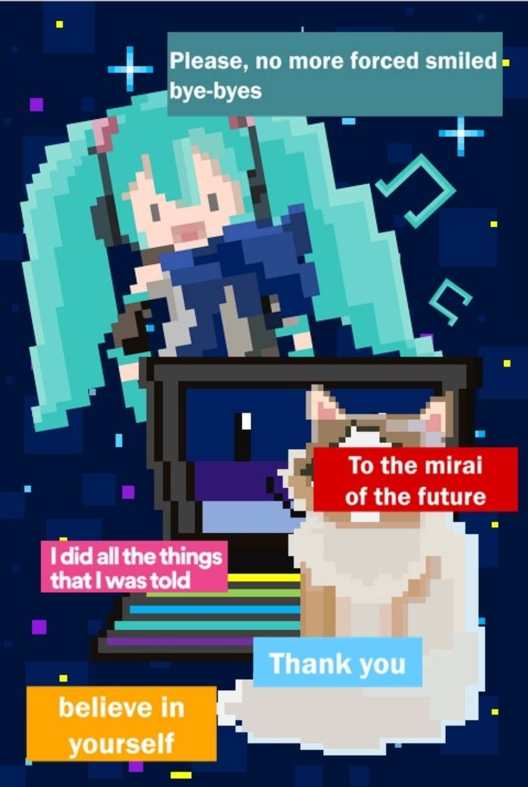

I choose things around me: dolls, computers and my cat
as my poster themes. During the pandemic, I spent the most
time with them and was very lonely. Whenever I feel lonely,
I feel comfortable looking at the smiling faces of the characters.
My cat sometimes squatts on my computer keyboard to stop me from
studying. Touching its furry head and body makes me feel a little
comforted. The background was painted as a starry sky because before
I came to Canada, my daily routine was changed from morning to night
due to the time difference, which was like a dream.
It also meant that I was studying and attending classes at night.
The smile of the computer was in the hope that I could face life with
a smile in the face of the pandemic.
Process Work
Initial Drafts
When I started sketching, my first idea was to draw scenes
from places I spend a lot of time at home. Before I came to Toronto,
I took some pictures of my desk, and this is a sketch of what the poster
I should draw. Stay at home most of the time I was in my class in the middle
of the night in the study, alone facing the computer screen, dare not big fear
of loud noise home and neighbor rest, recess's favorite anime hand tired look
at rear shelves, lu lu lie sleeping in front of the keyboard's soft of cats,
feel a trace of happiness, but also spread the lonely... Looking at the smiling
faces of the limited edition handwork on the shelf, I envy them for smiling
happily all the time... These details of my life come together to form my life
under COVID-19.